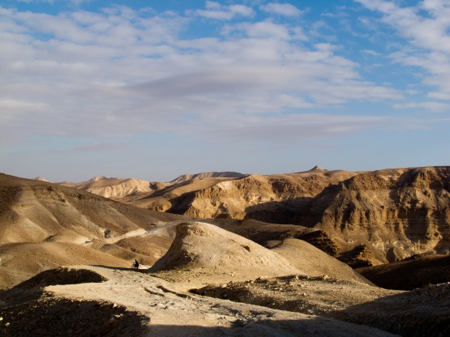
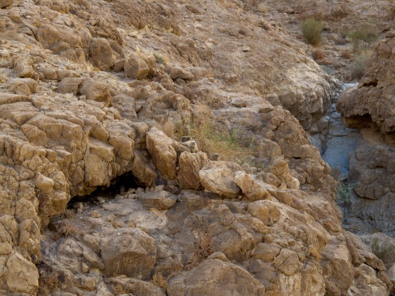
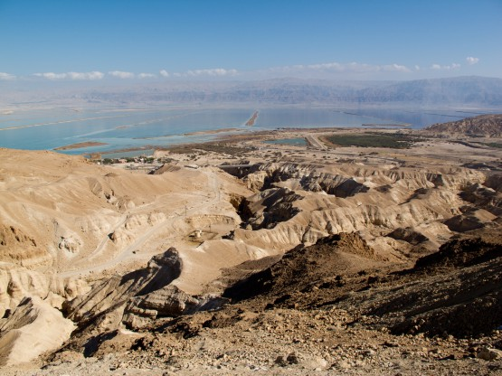
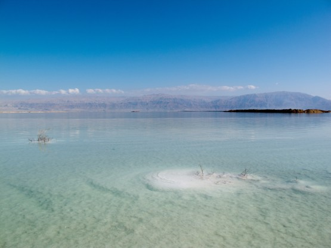
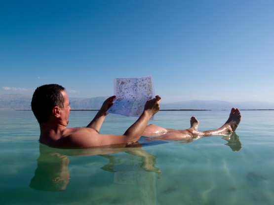
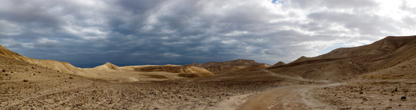

Седьмой день ВелоХануки.
Проснулись без будильника часов в 6. Вроде выспались, решили ехать до Арада, там узнавать насчет автобусов. Дело в том, что информация, которую удалось нарыть через интернет упорно говорила о последнем автобусе из Арада в сторону Тель-Авива в районе 16 часов. Нам такой расклад был совсем не удобен. Так как самолет только утром, то весь день шел наперекосяк.
До асфальтового шоссе идущего Масаду докрутили на удивление быстро, дальше бодро набрали эти полкилометра вверх. Скажу вам разница огромная в наборе высоты по грунту и по асфальту.
Последние километры грунта

Видите суслика? Меня убеждали, что это зайцы

В итоге в Араде мы были совсем не поздно. Первоначальный план предполагал в этот день длинный грунтовый маршрут от Арада к Мертвому морю, но это могло быть выполнено только при ночевке уже за Арадом, те нам не светило.
Автовокзал в Араде нашли быстро, оказалось он еще не открыт и все автобусы отправляются от простых остановок на соседней улице, а вся администрация заседает в неком контейнере рядом с остановкой. По-русски администрация говорила хорошо, но ровным счетом ничего не знала, ни о расписании, ни тем более о пересадках.
Зато люди на остановке, владели информацией в большей степени и, кстати, тоже говорили по-русски. Через полчаса расспросов удалось понять, что есть некий автобус 384, которого нет ни в одном расписании и идет он от отелей внизу на море сюда в Арад. Кроме того есть состыкованный с ним 389 автобус Арад-Тель-Авив, информации о котором опять же нет в интернете. День складывался замечательно.
Решили спуститься своим ходом к морю, это около километра вниз. Покупаться, а вечером на автобус и в путь. Сказано-сделано и вот мы уже летим вниз. На одном участке разогнались до 67 км/ч, больше не позволили повороты.

Недолгие расспросы привели на пляж с бесплатным душем и туалетом, где мы и провели остаток дня. Мертвое море - интересная лужа. Плавается в нем весьма необычно. Если на животе, то ноги поднимает из воды. Если на спине, то можно высунуть руки и ноги и все равно останешься на поверхности. Андрею с его царапинами, к сожалению, долго поплавать не удалось, в отличие от меня.
Дно покрыто слоем соли.


Пляж оказался совсем не многолюдным, но и его редкие посетители подходили и расспрашивали нас. Набор вопросов всегда одинаков, и все равно приятно.
Комментарий Андрея
Мы потенциально были готовы к выброске из Арада. Да ещё Игорь Скорубский сбросил SMS с инфой. Непонятно было как заброситься от Мёртвого моря до Арада вовремя. Имелось желание максимально затупить в последний день у моря. И подсказка на 384 автобус была своевременна. В общем, путей решения заброски в Тель-Авив было много. 1) Тот же 384, заехав в Арад, шёл далее в Вееrsheba, а там немеряно автобусов и непосредственно до аэропорта Бэн-Гурион., и до одного из автовокзалов в Тель-Авиве (имея две пересадки), автобусы: 384 – 96х - 144. 2) Также из Арада можно добираться в аэропорт через Лод (промышленный район), с двумя пересадками. А из Лода своим ходом до аэропорта Бэн-Гурион, это порядка 10 км. Автобусы: 384 (389)- 301- 249. От Мёртвого моря до Арада не проблемно доехать либо на маршрутке, либо на 384. При этом в районе 17.00 384 стыкуется в Араде с 389, т.е тупо перескакиваешь (перетаскиваешь байки) из автобуса в автобус. Отметил: автобусы не тупят, идут по указанному расписанию. Либо минуя Беэршеву двигаешь напрямую, без пересадок, из Арада в Телль-Авив. Вообщем из Арада до Тель-Авива мы добрались без пересадок. Расписание автобусов и ж/д транспорта смотрим здесь: http://www.egged.co.il/ru/index.asp - расписания автобусов, ж/д - http://www.travel-partner.co.il/ru/israel_ru.html.
До Тель-Авива добрались без приключений, если не считать, что малость не дождались 384 автобуса и прыгнули в маршрутку к арабу, который хотел зажать 10 шекелей сдачи, но Андрей принципиально их вытряс. Автовокзал в Тель-Авиве место суетное. Собрали байки и покатили в сторону нахаль (ручья) Аялон, который идет практически в сторону аэропорта и описан на velik.org. Благодаря загруженному заранее треку нашли нужную грунтовку и покатили.
Очень спокойное и тихое место этот ручей и дорожка приличная. Единственное, в одном месте там затеяли перепланировку берегов и мы малость поплутали пытаясь строго следовать треку, но вскоре вернулись на дорогу - ручей пересекать не надо, просто трек на сайте слегка устарел.
Аэропорт имени Бена Гуриона сооружение монументальное, но всё сообщение этого монстра с внешним миром происходит через узкие горлышки всего двух КПП, одно из которых находится на 1 трассе (автобан и нам туда не надо), а второе с той же стороны, но на второстепенной дороге. Ощущение странное, когда стоишь метрах в 200 от нужного тебе терминала, но чтобы в него попасть предстоит проехать километров 10, но вариантов пролезть прямо нет никаких. Хорошо, что у нас был большой запас по времени.
Велосипеды разбирали в аэропорту, здание просторное, место найти можно. Я немного покимарил, Андрей бодрился. На регистрацию начинают пускать очень заранее, так как процедура досмотра весьма затейлива. Просветили, наклеили бумажки на все сумки (включая напоясную) и на паспорт. Попросили вытащить велосипед из чехла, отсоеденить притянутые стяжками стойки палатки.
Долго спрашивали про самопальное крепление моего велокомпа, потом унесли мой велосипед в недра аэропорта минут на 10. Тем временем человек в перчатках перебирал мой велорюкзак, без спешки, кстати. Я точно не отследил, но в какой-то момент он начал чихать и прослезился. Склоняюсь к мысли, что всему виной пустынная пыль, которой пропитались все вещи и рюкзак. Хотя есть вариант, что он открыл пакет с грязными носками. Вещи Андрея он досматривать уже не стал
В самолете мы сразу уснули, даже проспали еду, но спать хотелось больше чем есть. Ничего, впереди трудовые будни - отдохнем
Даже не верится, что так много событий этого похода произошло всего за неделю, неделю Хануки.
Мне Израиль запомнился таким

Статистика дня:
Первый участок: Проехали: 47.1 km, за время: 12 hours, 47 minutes, 26 seconds, набор высоты: 648.9 m, спуск: 1281.9 m Трек.
Второй участок: Проехали: 37.1 km, за время: 3 hours, 42 minutes, 18 seconds, набор высоты: 674.8 m, спуск: 211.5 m Трек.
Статистика похода: Проехали: 376.9 km, набор высоты: 7945.3 m, спуск: 7947.7 m Трек.
Исходный файл (треки, точки, планируемые треки).
Текст - Александр Кунеш
Фотографии - Александр Кунеш, Андрей Полищук.
Декабрь 2010 года.